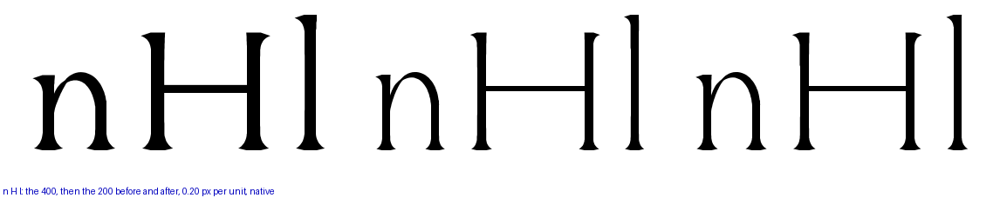
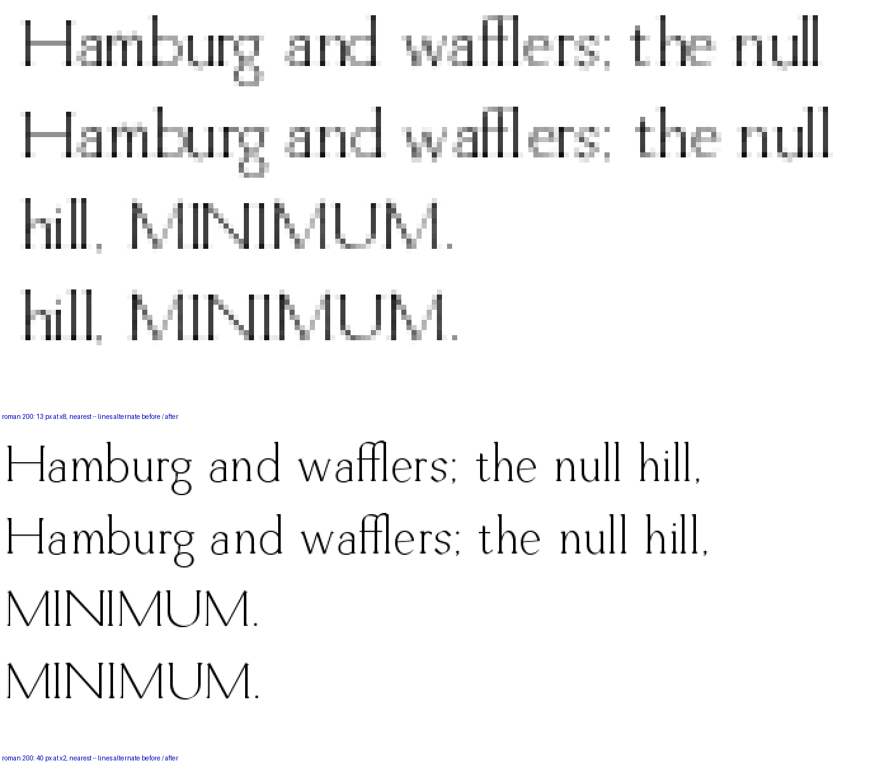

On the light-serif ladder, "b wins": the ExtraLight 200’s wedge is 0.75 of the 400’s — 39 long, 78 deep, drop 13 — where it had scaled with the stem to 34 × 68. Each row: the 400 for reference, then the 200 before and after. Native pixels.

